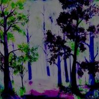
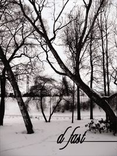

- Downtempo, Breaks, Electronic, Easy-listening
Self-released music album.
- Disco, Italo, Synth, Synthwave
Soundtrack for Aalto university course IDBM Challenge.
- Disco, Italo, Funk, Synth, Boogie
Self-released music album.
- Funk, Boogie, Electrofunk, Freejam
Self-released music album.
- Downtempo, Chillout, Lounge, Trip-Hop, Acid-Jazz
Self-released music album.
- Big-beat, Breakbeat, Breaks
Self-released music album.
- Funk, Electronic, Dance
Self-released music album.
- Downtempo, Chillout, Hip-Hop
Self-released music album.
- Downtempo, Chillout, Cut 'n Paste, Electronic
Self-released music album.
- Downtempo, Chillout, Hip-Hop
Self-released music album.
Lucy and the Moon
Digital Album (December 30, 2019)
Osaka
Digital Single (September 11, 2017)
Followers of Disco
Digital Album (August 27, 2014)
Got Porn?
Digital Album (December 12, 2012)

Sunday
CD-r, Digital Album (September 1, 2011 )
Bring Back The Happy
Digital Album (December 1, 2010)
Planet Boogie
CD-r, Digital Album (October 9, 2008)
Get Caught
CD-r, Digital Album (May 4, 2007)

Evil Insanity
Digital Album (March 25, 2005)

Tribute To Twang EP
Digital Album (March 16, 2004)